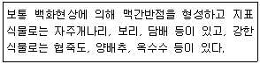
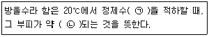
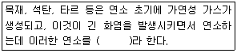

환경기능사 (2014-10-11 기출문제)
1과목: 대기오염방지
1. 농황산의 비중이 약 1.84, 농도는 75%라면 이농황산의 몰농도(mol/L)는? (단, 농황산의 분자량은 98이다.)
- 9
- 11
- 14
- 18
(정답률: 57%)

2. 굴뚝에서 배출되는 가스의 유속을 측정하고자 피토우관을 굴뚝에 넣었더니 동압이 5㎜H2O이었다. 이 때 배출가스의 유속은 얼마인가? (단, 피토우관 계수는 0.85이고, 공기의 비중량은 1.3kg/m3이다.)
- 5.92m/s
- 7.39m/s
- 8.84m/s
- 9.49m/s
(정답률: 47%)
3. 고도에 따라 대기권을 분류할 때 지표로부터 가장 가까이 있는 것은?
- 열권
- 대류권
- 성층권
- 중간권
(정답률: 89%)
4. 소각로에서 연소효율을 높일 수 있는 방법과 거리가 먼 것은?
- 공기와 연료의 혼합이 좋아야 한다.
- 온도가 충분히 높아야 한다.
- 체류시간이 짧아야 한다.
- 연료에 산소가 충분히 공급되어야 한다.
(정답률: 89%)
5. 집진장치에 관한 설명으로 옳지 않은 것은?
- 중력집진장치는 50㎛ 이상의 큰 입자를 제거하는데 유용하다.
- 원심력집진장치의 일반적인 형태가 사이클론이다.
- 여과집진장치는 여과재에 먼지를 함유하는 가스를 통과시켜 입자를 분리, 포집하는 장치이다.
- 전기집진장치는 함진가스 중의 먼지에 ＋전하를 부여하여 대전시킨다.
(정답률: 66%)
6. 다음 온실가스 중 지구온난화지수(GWP)가 가장 큰 것은?
- CH4
- SF6
- CO2
- N2O
(정답률: 62%)
7. 산성비의 주된 원인 물질로만 올바르게 나열된 것은?
- SO2, NO2, Hg
- CH4, NO2, HCl
- CH4, NH3, HCN
- SO2, NO2, HCl
(정답률: 76%)
8. 다음 보기에 해당하는 대기오염물질은?

- 황산화물
- 탄화수소
- 일산화탄소
- 질소산화물
(정답률: 77%)
9. 대기오염공정시험기준상 각 오염물질에 대한 측정방법의 연결로 옳지 않은 것은?
- 일산화탄소 - 비분산 적외선 분석법
- 염소 - 질산은 적정법
- 황화수소 - 메틸렌 블루법
- 암모니아 - 인도페놀법
(정답률: 56%)
10. 다음 중 주로 광화학반응에 의하여 생성되는 물질은?
- PAN
- CH4
- NH3
- HC
(정답률: 84%)
11. 유해가스 처리를 위한 흡착제 선택 시 고려해야할 사항으로 옳지 않은 것은?
- 흡착효율이 우수해야 한다.
- 흡착제의 회수가 용이해야 한다.
- 흡착제의 재생이 용이해야 한다.
- 기체의 흐름에 대한 압력손실이 커야 한다.
(정답률: 79%)
12. 연소조절에 의하여 NOx 발생을 억제하는 방법 중 옳지 않은 것은?
- 연소 시 과잉공기를 삭감하여 저산소 연소시킨다.
- 연소의 온도를 높여서 고온 연소를 시킨다.
- 버너 및 연소실 구조를 개량하여 연소실내의 온도분포를 균일하게 한다.
- 화로 내에 물이나 수증기를 분무시켜서 연소시킨다.
(정답률: 72%)
13. 0.3g/Sm3인 HCl의 농도를 ppm으로 환산하면? (단, 표준상태 기준)
- 116.4ppm
- 137.7ppm
- 167.3ppm
- 184.1ppm
(정답률: 34%)
14. 중량비로 수소가 15%, 수분이 1% 함유되어 있는 중유의 고위발열량이 13000 kcal/kg이다. 이 중유의 저위발열량은?
- 11368kcal/kg
- 11976kcal/kg
- 12025kcal/kg
- 12184kcal/kg
(정답률: 50%)
15. 다음 중 건조대기 중에 가장 많은 비율로 존재하는 비활성 기체는?
- He
- Ne
- Ar
- Xe
(정답률: 82%)
2과목: 폐수처리
16. Stokes의 법칙에 의한 침강속도에 영향을 미치는 요소로 가장 거리가 먼 것은?
- 침전물의 밀도
- 침전물의 입경
- 폐수의 밀도
- 대기압
(정답률: 69%)
17. 수처리 시 사용되는 응집제와 거리가 먼 것은?
- 입상활성탄
- 소석회
- 명반
- 황산반토
(정답률: 74%)
18. 750g의 Glucose(C6H12O6)가 완전한 혐기성 분해를 할 경우 발생 가능한 CH4 가스량은? (단, 표준 상태 기준)
- 187L
- 225L
- 255L
- 280L
(정답률: 27%)
19. 포기조의 용량이 500m3, 포기조 내의 부유물질의 농도가 2000mg/L일 때, MLSS의 양은?
- 500kg MLSS
- 800kg MLSS
- 1000kg MLSS
- 1500kg MLSS
(정답률: 59%)
20. 활성슬러지공법에서 슬러지 반송의 주된 목적은?
- MLSS 조절
- DO 공급
- pH 조절
- 소독 및 살균
(정답률: 74%)
21. 수돗물을 염소로 소독하는 가장 주된 이유는?
- 잔류염소 효과가 있다.
- 물과 쉽게 반응한다.
- 유기물을 분해한다.
- 생물농축 현상이 없다.
(정답률: 81%)
22. 폐수처리공정에서 유입폐수 중에 포함된 모래, 기타 무기성의 부유물로 구성된 혼합물을 제거하는데 사용되는 시설은?
- 응집조
- 침사지
- 부상조
- 여과조
(정답률: 72%)
23. 위어(weir)의 설치 목적으로 가장 적합한 것은?
- pH 측정
- DO 측정
- MLSS 측정
- 유량 측정
(정답률: 64%)
24. 활성슬러지법은 여러 가지 변법이 개발되어 왔으며, 각 방법은 특별한 운전이나 제거효율을 달성하기 위하여 발전되었다. 다음 중 활성슬러지법의 변법으로 볼 수 없는 것은?
- 다단 포기법
- 접촉 안정법
- 장기 포기법
- 오존 안정법
(정답률: 74%)
25. 다음 중 임호프콘(Imhoff cone)이 측정하는 항목으로 가장 적합한 것은?
- 전기음성도
- 분원성대장균군
- pH
- 침전물질
(정답률: 60%)
26. SVI와 SDI의 관계식으로 옳은 것은? (단, SVI : Sludge Volume Index, SDI : Sludge Density Index)
- SVI=100/SDI
- SVI=10/SDI
- SVI=1/SDI
- SVI=SDI/1000
(정답률: 70%)
27. 하수처리장의 유입수 BOD가 225mg/L이고, 유출수의 BOD가 55ppm이었다. 이 하수처리장의 BOD 제거율은?
- 약 55%
- 약 76%
- 약 83%
- 약 95%
(정답률: 59%)
28. 다음은 수질오염공정시험기준상 방울수에 대한 설명이다. ( )안에 알맞은 것은?

- ㉠ 10방울, ㉡ 1mL
- ㉠ 20방울, ㉡ 1mL
- ㉠ 10방울, ㉡ 0.1mL
- ㉠ 20방울, ㉡ 0.1mL
(정답률: 80%)
29. 다음 포기조 내의 미생물 성장 단계 중 신진 대사율이 가장 높은 단계는?
- 내생 성장 단계
- 감소 성장 단계
- 감소와 내생 성장 단계 중간
- 대수 성장 단계
(정답률: 71%)
30. 회전 원판식 생물학적 처리시설로 유량 1000m3/day, BOD 200mg/L로 유입될 경우, BOD 부하(g/m 2·day)는? (단, 회전원판의 지름은 3m, 300매로 구성되어 있으며, 두께는 무시하며, 양면을 기준으로 한다.)
- 29.4
- 47.2
- 94.3
- 107.6
(정답률: 39%)
31. 탈질(denitrification)과정을 거쳐 질소 성분이 최종적으로 변환된 질소의 형태는?
- NO2 - N
- NO3 - N
- NH3 - N
- N2
(정답률: 69%)
32. 공장폐수 50mL를 검수로 하여 산성 100℃ KMnO4법에 의한 COD 측정을 하였을 때 시료적정에 소비된 0.025N KMnO4 용액은 5.13mL이다. 이 폐수의 COD 값은? (단, 0.025N KMnO4 용액의 역가는 0.98이고, 바탕시험 적정에 소비된 0.025N KMnO4 용액은 0.13mL이다.)
- 9.8mg/L
- 19.6mg/L
- 21.6mg/L
- 98mg/L
(정답률: 39%)
33. 하천의 유량은 1000m3/일, BOD농도 26ppm 이며, 이 하천에 흘러드는 폐수의 양이 100m3/일, BOD농도 165ppm 이라고 하면 하천과 폐수가 완전 혼합된 후 BOD농도는? (단, 혼합에 의한 기타 영향 등은 고려하지 않는다.)
- 38.6ppm
- 44.9ppm
- 48.5ppm
- 59.8ppm
(정답률: 28%)
34. 다음 중 레이놀즈수 (Reynold's number)와 반비례 하는 것은?
- 액체의 점성계수
- 입자의 지름
- 액체의 밀도
- 입자의 침강속도
(정답률: 59%)
35. 염소 살균에서 용존 염소가 반응하여 물의 불쾌한 맛과 냄새를 유발하는 것은?
- 클로로페놀
- PCB
- 다이옥신
- CFC
(정답률: 65%)
3과목: 폐기물처리
36. 퇴비화의 장점으로 가장 거리가 먼 것은?
- 폐기물의 재활용
- 높은 비료가치
- 과정 중 낮은 Energy 소모
- 낮은 초기시설 투자비
(정답률: 81%)
37. 다음 중 폐기물의 적환장이 필요한 경우와 거리가 먼 것은?
- 폐기물 처분장소가 수집장소로부터 16km 이상 멀리 떨어져 있을 때
- 작은 용량의 수집차량(15m3 이하)을 사용할 때
- 작은 규모의 주택들이 밀집되어 있을 때
- 상업지역에서 폐기물 수집에 대형 수거용기를 많이 사용 할 때
(정답률: 64%)
38. 쓰레기의 양이 4000m3이며, 밀도는 1.2ton/m3이다. 적재용량이 8ton인 차량으로 이 쓰레기를 운반한다면 몇 대의 차량이 필요한가?
- 120대
- 400대
- 500대
- 600대
(정답률: 65%)
39. A도시 쓰레기 성분 중 안타는 성분이 중량비로 약 60% 차지하였다. 지금 밀도가 400kg/m3인 쓰레기가 8m3 있을 때 타는 성분 물질의 양은?
- 1.28ton
- 1.92ton
- 3.2ton
- 19.2ton
(정답률: 40%)
40. 유동상 소각로에서 유동상 매질이 갖추어야 할 특성으로 거리가 먼 것은?
- 불활성 일 것
- 내마모성 일 것
- 융점이 낮을 것
- 비중이 작을 것
(정답률: 59%)
41. 쓰레기 소각로의 소각능력이 120kg/m2·h인 소각로가 있다. 하루에 8시간씩 가동하여 12000kg의 쓰레기를 소각하려고 한다. 이때 소요되는 화격자의 넓이는 몇 m2인가?
- 11.0
- 12.5
- 14.0
- 15.5
(정답률: 56%)
42. 화격자 연소기의 특징으로 거리가 먼 것은?
- 연속적인 소각과 배출이 가능하다.
- 체류시간이 짧고 교반력이 강하여 수분이 많은 폐기물의 연소에 효과적이다.
- 고온 중에서 기계적으로 구동하므로 금속부의 마모손실이 심한 편이다.
- 플라스틱과 같이 열에 쉽게 용해되는 물질에 의해 화격자가 막힐 염려가 있다.
(정답률: 62%)
43. 유해폐기물 처리를 위해 사용되는 용매추출법에서 용매의 선택기준으로 옳지 않은 것은?
- 끓는점이 낮아 회수성이 높을 것
- 밀도가 물과 다를 것
- 분배계수가 낮아 선택성이 작을 것
- 물에 대한 용해도가 낮을 것
(정답률: 52%)
44. 매립지에서 매립 후 경과기간에 따라 매립가스 (Landfill gas) 생성과정을 4단계로 구분할 때, 각 단계에 관한 설명으로 가장 거리가 먼 것은?
- 제1단계에서는 친산소성 단계로서 폐기물 내에 수분이 많은 경우에는 반응이 가속화 되어 용존산소가 쉽게 고갈되어 2단계 반응에 빨리 도달한다.
- 제2단계에서는 산소가 고갈되어 혐기성 조건이 형성되며 질소가스가 발생하기 시작하여, 아울러 메탄가스도 생성되기 시작하는 단계이다.
- 제3단계에서는 매립지 내부의 온도가 상승하여 약 55℃ 정도까지 올라간다.
- 4단계에서는 매립가스 내 메탄과 이산화탄소의 함량이 거의 일정하게 유지된다.
(정답률: 64%)
45. 쓰레기 수거대상인구가 550000명이고, 쓰레기 수거실적이 220000톤/년이라면 1인당 1일 쓰레기 발생량(kg)은? (단, 1년 365일로 계산)
- 1.1kg
- 1.8kg
- 2.1kg
- 2.5kg
(정답률: 45%)
46. 다음 중 유해 폐기물의 국제적 이동의 통제와 규제를 주요 골자로 하는 국제협약(의정서)은?
- 교토의정서
- 바젤 협약
- 비엔나 협약
- 몬트리올 의정서
(정답률: 82%)
47. 짐머만 공법이라고도 하며, 액상 슬러지에 열과 압력을 작용시켜 용존산소에 의해 화학적으로 슬러 지내의 유기물을 산화시키는 방법은?
- 호기성 산화
- 습식 산화
- 화학적 안정화
- 혐기성 소화
(정답률: 72%)
48. 도시에서 생활쓰레기를 수거할 때 고려할 사항으로 가장 거리가 먼 것은?
- 처음 수거지역은 차고지와 가깝게 설정한다.
- U자형 회전을 피하여 수거한다.
- 교통이 혼잡한 지역은 출·퇴근 시간을 피하여 수거한다.
- 쓰레기가 적게 발생하는 지점은 하루 중 가장 먼저 수거하도록 한다.
(정답률: 85%)
49. 소각로에서 완전연소를 위한 3가지 조건(일명 3T)으로 옳은 것은?
- 시간 - 온도 – 혼합
- 시간 - 온도 - 수분
- 혼합 - 수분 – 시간
- 혼합 - 수분 - 온도
(정답률: 79%)
50. 파쇄하였거나 파쇄하지 않은 폐기물로부터 철분을 회수하기 위해 가장 많이 사용되는 폐기물 선별 방법은?
- 공기선별
- 스크린선별
- 자석선별
- 손선별
(정답률: 84%)
51. 다음 중 분뇨수거 및 처분계획을 세울 때 계획 하는 우리나라 성인 1인당 1일 분뇨발생량의 평균범위로 가장 적합한 것은?
- 0.2~0.5L
- 0.9~1.1L
- 2.3~2.5L
- 3.0~3.5L
(정답률: 76%)
52. 다음은 연소의 종류에 관한 설명이다. ( )안에 알맞은 것은?

- 표면연소
- 분해연소
- 확산연소
- 자기연소
(정답률: 64%)
53. 폐기물의 파쇄작용이 일어나게 되는 힘의 3종류와 가장 거리가 먼 것은?
- 압축력
- 전단력
- 수평력
- 충격력
(정답률: 79%)
54. 스크린 선별에 관한 설명으로 거리가 먼 것은?
- 스크린 선별은 주로 큰 폐기물로부터 후속 처리 장치를 보호하거나 재료를 회수하기 위해 많이 사용 한다.
- 트롬멜 스크린은 진동 스크린의 형식에 해당한다.
- 스크린의 형식은 진동식과 회전식으로 구분할 수 있다.
- 회전 스크린은 일반적으로 도시폐기물 선별에 많이 사용하는 스크린이다.
(정답률: 57%)
55. 다음 중 유기물의 혐기성소화 분해 시 발생되는 물질로 거리가 먼 것은?
- 산소
- 알코올
- 유기산
- 메탄
(정답률: 58%)
4과목: 소음 진동학
56. 음향파워가 0.2watt이면 PWL은?
- 113dB
- 123dB
- 133dB
- 226dB
(정답률: 41%)
57. 사람의 귀는 외이, 중이, 내이로 구분할 수 있다. 다음 중 내이에 관한 설명으로 옳지 않은 것은?
- 음의 전달 매질은 액체이다.
- 이소골에 의해 진동음압을 20배 정도 증폭시킨 다.
- 음의 대소는 섬모가 받는 자극의 크기에 따라 다르다.
- 난원창은 이소골의 진동을 와우각 중의 림프액에 전달하는 진동판이다.
(정답률: 51%)
58. 아파트 벽의 음향투과율이 0.1% 라면 투과손실은?
- 10dB
- 20dB
- 30dB
- 50dB
(정답률: 53%)
59. 소음계의 구성요소 중 음파의 미약한 압력변화 (음압)를 전기신호로 변환하는 것은?
- 정류회로
- 마이크로폰
- 동특성조절기
- 청강보정회로
(정답률: 76%)
60. 흠음재료 선택 및 사용상 유의점으로 거리가 먼 것은?
- 다공질 재료는 산란되기 쉬우므로 표면을 얇은 직물로 피복하는 행위는 금해야 한다.
- 다공질 재료의 표면을 도장하면 고음역에서 흡음 율이 저하한다.
- 실의 모서리나 가장자리 부분에 흡음재를 부착하면 효과가 좋아진다.
- 막진동이나 판진동형의 것은 도장해도 차이가 없다.
(정답률: 46%)